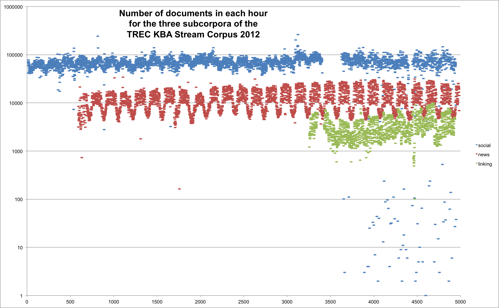

KBA Stream Corpus 2012
This page is archival. The KBA Stream Corpus 2012 is being subsumed into the KBA Stream Corpus 2013.
To support the kba-ccr-2012 task, we assembled a corpus in which every document has a time stamp in the time range from October 2011 through April 2012. This corpus is distributed by NIST (see below).
The corpus has three components:
- linking (sample (json, see thrift below)) Brian Eoff and Hilary Mason at Bitly have generously donated a set of URLs that were shortened at bitly.com. The timestamp of the shorten event places it in the stream. To create a substream from Bitly's massive data stream, we designed a set of ~10k queries that Brian uses to query their internal index of the full text of all pages. These ~10k queries are the Wikipedia page titles of the ~50 topic entities for kba-ccr-2012 and also titles of all of their in- and out-linking pages in the English Wikipedia snapshot from January 2012. The queries that matched a given text are in the 'source_metadata' property of the JSON objects described below.
- social (sample (json, see thrift below)) We obtained an aggregated stream of blogs and forums with rich category metadata.
- news (sample (json, see thrift below)) We acquired a set of URLs of global public news wires with timestamps and fetched the content.
Corpus Stats
The corpus is approximately 9TB of 'raw' text, not including 'cleansed' and 'ner'. After XZ compression, it is 1.9TB.
| news | linking | social | |
|---|---|---|---|
| num docs | 134,625,663 | 5,400,200 | 322,650,609 |
| size of 'raw' | 8072GB | 350GB | 531GB |
| num docs with 'cleansed' & 'ner' | 53,245,364 | 5,343,568 | 309,071,598 |
| size of 'ner' | 17,53GB | 222GB | 1723GB |
Stats in the table are derived from aggregate-stats.json
The corpus consists of several languages. The boilerpipe cleansed and Stanford NER output was only generated for documents which had a reasonable chance of being English.
The corpus spans the months October 2011 through April 2012. The plot below was generated from all-date-hour-stats.json
Named Entity Tagging
Thanks to the TREC KBA Metadata Committee the corpus includes boilerpipe cleansed text and Stanford NER tagging on the English subset of the corpus. You can see a small sample of this NER tagging in the citation corpus sample sample-wikipedia.gz. The Metadata Committee is working on providing this type of tag-stripping and NER tagging on all possibly-English texts in the corpus.
To take full advantage of the cleansed and ner output, one should examine the descriptions of these processing stages in doc.body.stages
The structure of the rows in the NER output is:
TokenID, Token, Lemma, PartOfSpeechTag, EntityMentionType, StartOffset, EndOffset
Directory Structure
The files containing JSON lines are gzipped and stored in a shallow directory hierarchy:
/stream-corpus/YYYY-MM-DD-HH/news.(md5).gz /stream-corpus/YYYY-MM-DD-HH/social.(md5).gz /stream-corpus/YYYY-MM-DD-HH/linking.(md5).gz
'YYYY-MM-DD-HH' denotes a year-month-day-hour in UTC and 'md5' is the hex representation of the md5 hash of the contents within the gzipped file. The number of stream-item instances per file varies between a few hundred and a few hundred thousand. This directory structure should enable a variety of processing approaches, including multi-step mapreduce jobs with hadoop.
Thrift Serialization
We transformed the corpus from JSON to thrift, which is >10x faster to deserialize and supports binary data, thus allowing us to drop the string-escape encoding hack described below. Our thrift objects are defined in http://trec-kba.org/schemas/v1.0/kba.thrift, which you can use to generate client code in most programming languages. For example, to generate java or python client classes for loading the deserialized data, you can:
thrift -r --gen py kba.thrift thrift -r --gen java kba.thrift
You can see thrift in action in two examples:
kba_thrift_verify uses the stats.json file that is present in every directory of the corpus to confirm that all of the data is present in that directory. Note that the kba_thrift_verify tool relies on four components that are not part of the python standard library:
- The python classes generated by thrift --gen (see above)
- The python bindings to thrift,
- XZ utils command line tools, which it uses as a child process,
- GnuPG, for decrypting the corpus using the key provided to you by NIST, which it also uses as a child process.
Obtaining the Corpus
See the corpus access page at NIST: http://trec.nist.gov/data/kba.html
JSON Format (deprecated, replaced by thrift format)
The corpus is stored in gzip'ed files containing one document per line. Each line is a JSON string containing both metadata and the raw byte array of the text. Generic JSON does not support byte arrays. Instead of using BSON, we chose to string-escape the raw bytes of content so they could be stored in generic JSON.
Checkout the schema viewer!
The documents are stored in JSON objects, so each document and its metadata is serialized on to one line. The corpus consists of files with one JSON object per line. The schema for these JSON objects is http://trec-kba.org/schemas/v1.0/stream-item.json, which you can explore using this JSON schema validator.
Character Encodings
All strings in the metadata and instances of content-item are treated as byte arrays and converted to string literals that JSON can handle without Unicode conversion. The particular flavor of string literal used is Python's string literal, i.e. we used String.encode('string-escape') which is the same as repr(my_string). To obtain the original byte array in python, one can:
import json
# get first doc out of the file
json_string = open('news-f3023a10a2553766f958c424ebdeafef.jsonlines').readline()
# deserialize (deprecated, replaced by thrift format)
doc = json.loads( json_string )
# unescape the string literal to regain the raw bytes, (deprecated, replaced by thrift format)
raw_bytes = doc['body']['raw'].decode('string-escape')
# use the character encoding suggested by the metadata.
# This is still relevant on the thrift format, because it
# represents the probable encoding of the 'raw' data served
# to us by the remote host
char_string = raw_bytes.decode(doc['body']['encoding'], errors='replace')
A Java implementation of Python's string escape and unescape functions is available here: http://trec-kba.org/schemas/v1.0/StringEscapePythonUtils.java.
Citation Corpus (on hold)
We are also gathering a corpus of pages cited in the English Wikipedia. These citations were created by real Wikipedians. The corpus can be used for many purposes, including training models. Here is an sample of a few documents that are cited by multiple Wikipedia entities.